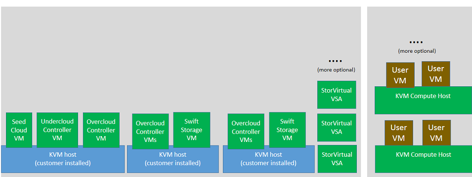
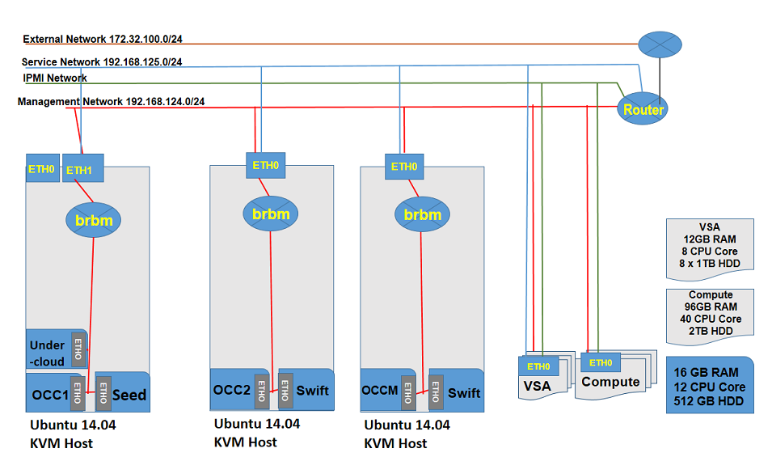

HP Helion OpenStack® 1.0 Flexible Control Plane Overview
The HP Helion OpenStack Flexible Control Plane introduces the capacity to deploy the control plane in a virtual environment in addition to the current bare-metal physical deployment. This new configuration reduces the control plane footprint to just three servers from the current seven servers.
This topic covers:
Due to length, the step-by-step installation instructions are available separately.
Overview
The Flexible Control Plane addresses the following concerns with the existing deployment model:
- Requires too many controller nodes
- Controllers must be physical servers
- Too large a footprint for smaller clouds
The Flexible Control Plane is supported for the following use cases:
- Evaluation
- Demonstration
- Proof of concept
Current Known Limitations:
- The Flexible Control Plane is not supported for production use.
- Backup and Restore of a FCP Cloud is not supported.
- VSA-AO is not supported.
Deployment Architecture
Currently, the Flexible Control Plane requires deployment on three KVM hosts. Figure 1 illustrates the deployment of overcloud compute nodes and VSA nodes to physical servers. In the diagram, the seed VM, undercloud controller node, overcloud controller nodes, and Swift nodes are in the virtualized environment. The StoreVirtual node and overcloud compute nodes remain baremetal servers.

Figure 1
In the deployment scenario in Figure 2, the cloud control plane is distributed across three KVM hosts with the deployment of VSA storage nodes and overcloud Nova compute nodes on physical servers.

Figure 2
Environment Details
The above environment contains the following networks:
- Management Network
- IPMI
- Service
- External
Management Network
This network is used for most cloud traffic including: PXE boot nodes, tenant access to service APIs, internal API traffic between services (one service to another), HA heartbeats, tenant access to services, VxLAN traffic for between tenant VMs, VM access to block and object storage, object storage replication and synchronization between StoreVirtual VSAs, Object Operations service nodes, MySQL clusters, RabbitMQ clusters, keepalived, CODN access to catalog, logging traffic to centralized logging, monitoring checks to Icinga.
In this example, the Management Network CIDR is 192.168.124.0/24.
IPMI (Intelligent Platform Management Interface)
This is the network for server hardware management. In this example the CIDR (Classless Inter-Domain Routing) address of the IPMI network is 192.168.1.0/24.
Service
Connects trusted VMs in the overcloud to communicate with the cloud infrastructure component using this network. In this example, the Service Network CIDR is 192.168.125.0/24.
External
This network is connected to the Internet or intranet and provides floating IPs. In this example the External Network CIDR is 172.32.100.0/24.
Hardware Details
KVMHost
The following configuration is used for the KVM host.
- RAM: 256 GB
- CPU Cores: 20
- HDD: 2TB
- OS Installed: Ubuntu 14.04 LTS
VSA Nodes
Three (3) physical servers are used as VSA nodes.
- RAM: 12 GB
- CPU Cores: 8
- HDD: 8*1 TB
Physical Compute
The following configuration is used for the overcloud compute node. - RAM: 96GB - CPU Core: 40 - HDD: 2TB
Prerequisites
The Flexible Control Plane configuration has the same prerequisites as HP Helion OpenStack 1.01. Please be sure the environment satisfies the prerequisites before beginning installation.
KVM Host Setup
Set up KVM hosts and ensure all the hardware requirements are met and the required prerequisites are fulfilled before you begin your installation. Note that there are further prerequisites beyond those listed for HP Helion OpenStack 1.01 mentioned previously.
- The following packages must be installed on all the KVM hosts.
- xrdp
- xfce4
- qemu-kvm
- openvswitch-switch
- openvswitch-common
- libssl-dev
- libffi-dev
- virt-manager
- libvirt-bin
- python-libvirt
- chromium-browser
- Set up password-less SSH logins using the key generator in PuTTy or a similar application.
- Set up the password-less logins between all the KVM hosts. This enables the root user of any KVM host to be able to log in via SSH to all other KVM hosts without a password.
- Set up password-less login for the root user of the same KVM host. This enables the root user of the KVM host to be able to log in to the same KVM host without a password.
Configurable Options for Flexible Control Plane
The following section describes the environment variables involved in configuring the Flexible Control Plane. These variables are new with Flexible Control Plane, so you won't have seen them before if you are familiar with the HP Helion OpenStack installation process. You will set them during the installation process outlined in the installation instructions. Here, just take note of what is configurable in this release, and what the settings mean.
Configurable Variables
Below are descriptions of available configuration variables. Again, you will set these later, during the installation step-by-step process.
HP_VM_MODE Set this variable to specify the mode of deployment as single or hybrid. Currently, the options supported are: "Y", "HYBRID" and "Not Set". To enable this feature, set the value to "HYBRID".
export HP_VM_MODE=HYBRID
HP_ MULTI_ KVM This variable enables the heterogeneous environment to support the multiple hypervisors to host HP Helion OpenStack Control Plane. The best practice is to set it to three (3).
export HP_MULTI_ KVM=3
All of the remaining variable values you set here will match the flavor specified in the uc_custom.flavors.json file. (A flavor is a description of a hardware resource in terms of CPU, RAM, and memory. If all of these three are the same, the resources are the same flavor.)
OvercloudBlockStorageFlavor Set this variable to specify the overcloud block storage flavors to be used at the time of deployment.
export OvercloudBlockStorageFlavor=BlockStorageFlavor
OvercloudComputeFlavor Set this variable to specify the overcloud compute flavor to be used at the time of deployment.
export OvercloudComputeFlavor=computeflavor
OvercloudControlFlavor Set this variable to specify the flavor for the overcloud management controller to be used at the time of deployment.
export OvercloudControlFlavor=controllerMgmtFlavor
controller0Flavor Set this variable to specify the overcloud controller0 flavor to be used at the time of deployment.
export controller0Flavor= controller0Flavor
controller1Flavor Set this variable to specify the overcloud controller1 flavor to be used at the time of deployment.
export controller1Flavor= controller1Flavor
OvercloudSwiftScaleoutProxyFlavor Set this variable to specify the overcloud Swift Scale-out Proxy flavor to be used at the time of deployment.
export OvercloudSwiftScaleoutProxyFlavor= SwiftScaleoutProxyFlavor
OvercloudVsaFlavor Set this variable to specify the overcloud VSA flavor to be used at the time of deployment.
export OvercloudVsaFlavor= VsaFlavor
OvercloudSwiftStorageFlavor Set this variable to specify the overcloud Swift Storage flavor to be used at the time of deployment.
export OvercloudSwiftStorageFlavor=SwiftStorageFlavor
OvercloudSwiftScaleoutObjectFlavor Set this variable to specify the overcloud Swift Scale-out object flavor to be used at the time of deployment.
export OvercloudSwiftScaleoutObjectFlavor=SwiftScaleoutObjectFlavor
Configuration Files
The Flexible Control Plane will also require the following configuration files in the root directory: uc_custom_flavors.json and kvms.csv. Note the following explanations of what these files will contain. They will be created later in the installation process (installation instructions).
uc_custom_flavors.json
The uc_custom_flavors.json file, which you will create later, during the installation process defined in the installation instructions is required to define the flavors that will be used during the deployment. This flavor information is added to the undercloud and used when deploying the control plane nodes as VMs on target KVM host.
A flavor node in uc_custom_flavors.json consists of the following values:
- name: Name of the node
- memory: Memory consumed by the node
- Disk: Disk consumed by the node
- cpu: Number of CPUs used
- arch: Architecture type of the node
- hw_type: Hardware type. It can be Baremetal or Virtual machine
- node_type: Role of the node. For example: compute, VSA, Swift etc.
kvms.csv
A kvms.csv file will also be created later via the installation instructions. It is required to define the KVM hosts being used for Flexible Control Plane deployment. This file contains the IP of the KVM host and an account with administrator or root privileges.
Continue to step-by-step installation instructions and known issues.